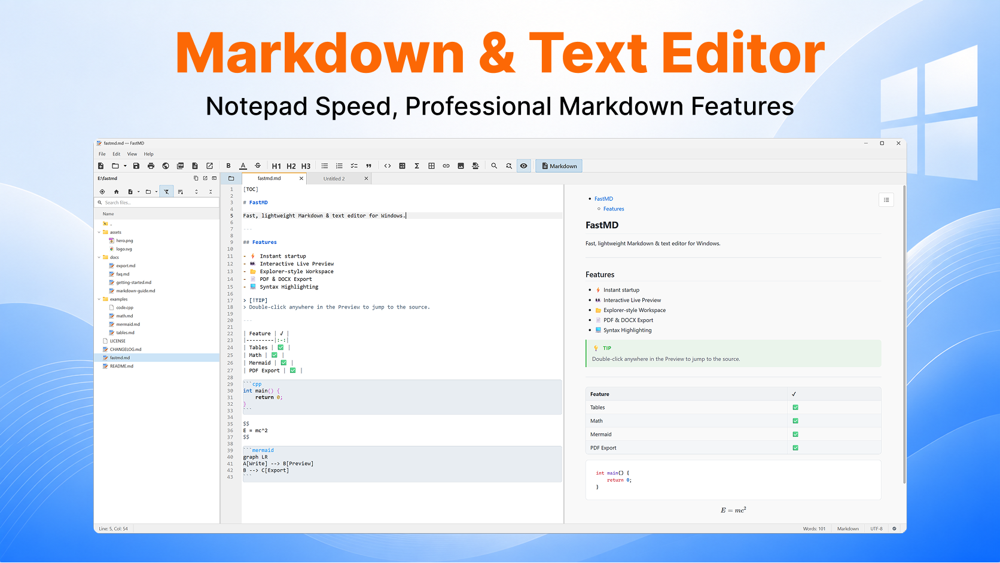
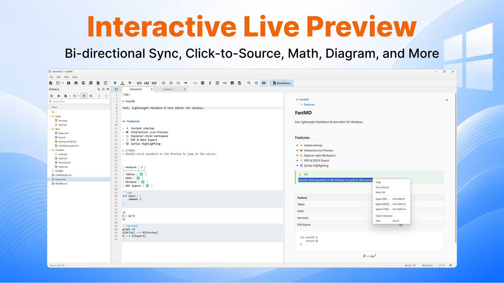
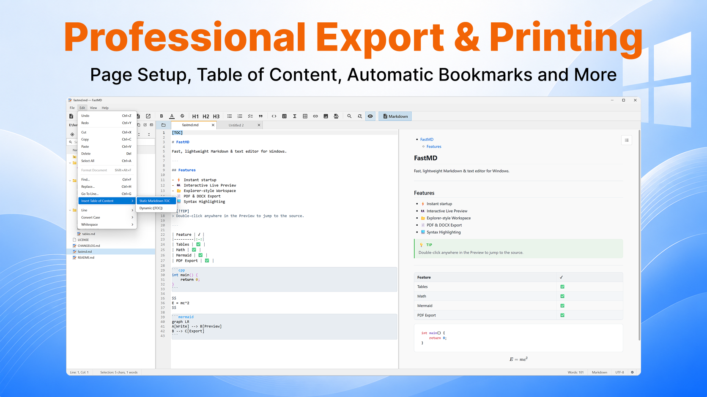
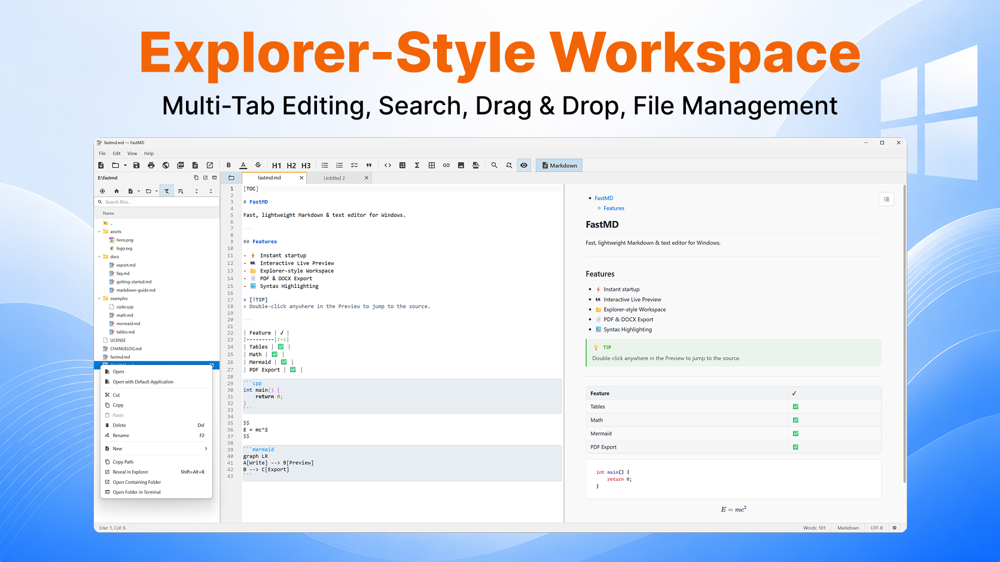
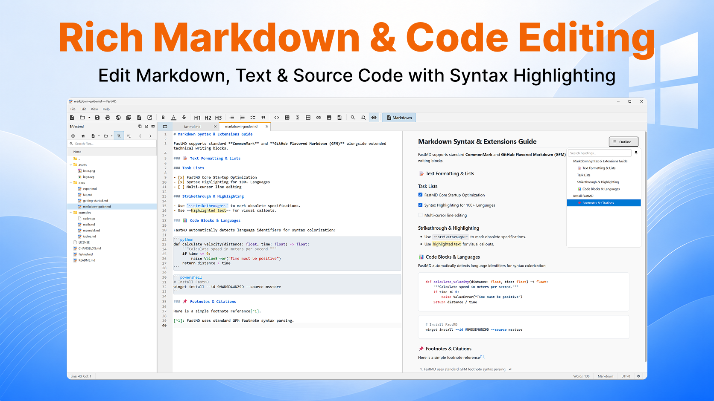
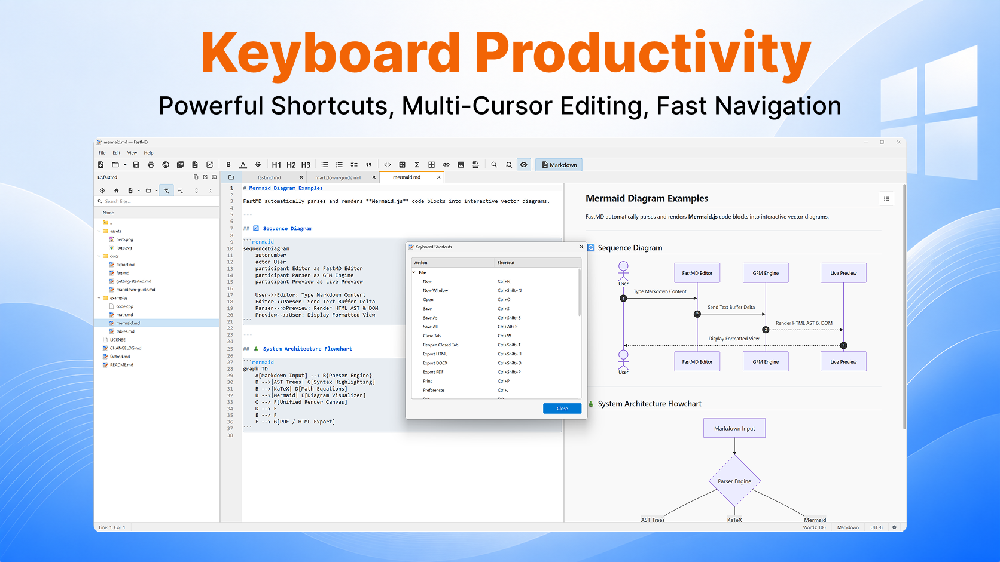
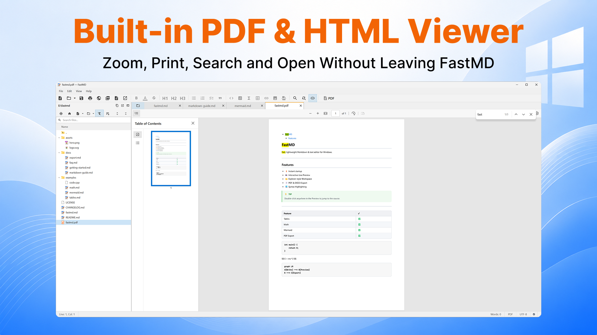
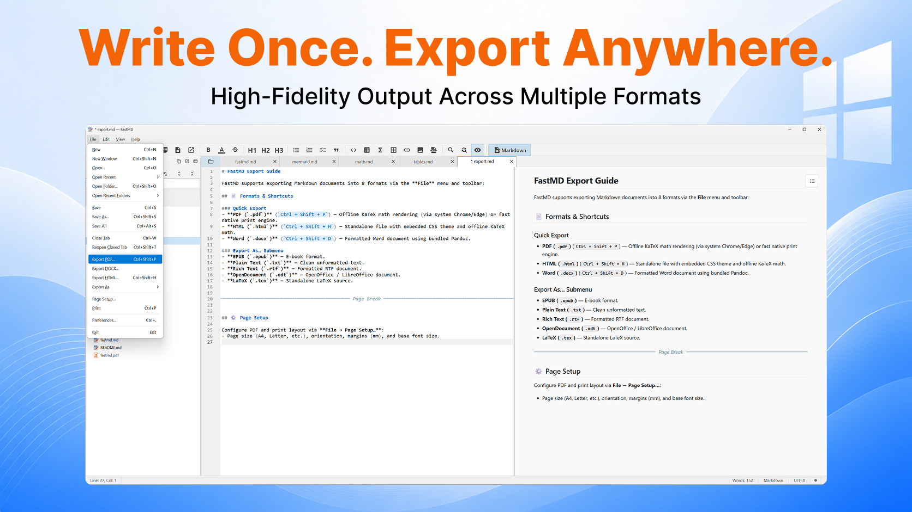
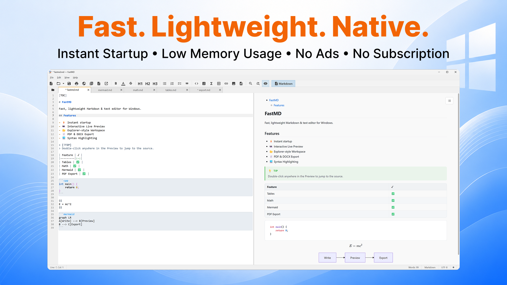

FastMD in Action
Explore high-resolution screenshots of FastMD's native interface, live WebView2 preview, math & chemistry toolbars, mind maps, and multi-format exports.

Markdown & Text Editor
Notepad Speed, Professional Markdown Features
Distraction-free native split view with CommonMark syntax highlighting on the left and real-time live preview with callout blocks, custom tables, code blocks, and math equations on the right.

Interactive Live Preview
Bi-directional Sync, Click-to-Source Navigation & Context Menu
Double-click any paragraph line, list item, or heading in the preview to jump to the exact source line. Context menu allows 1-click PDF/DOCX/HTML export, printing, and source navigation.

Professional Export & Printing
Page Setup, Table of Content, Automatic Bookmarks
Generate PDF files with native heading outline bookmarks, export Word (.docx) & self-contained HTML files, or insert dynamic [TOC] Table of Contents automatically.

Explorer-Style Workspace
Multi-Tab Editing, Search, Drag & Drop, File Management
Persistent file tree (F8) with recursive file search, context menu (Reveal in Explorer, Terminal), drag-and-drop file operations, and smooth cross-window tab dragging.

Rich Markdown & Code Editing
Edit Markdown, Text & Source Code with Syntax Highlighting
Highlights Markdown syntax, task list checkboxes, strikethrough, highlights, footnotes, and 190+ programming languages with an instant floating document outline tree.

Keyboard Productivity
Powerful Shortcuts, Multi-Cursor Editing, Mermaid Diagrams
Comprehensive keyboard shortcut overlay (F1 palette, Ctrl+G Go To), line movement, and offline Mermaid diagram rendering (sequence diagrams, flowcharts, ER, Gantt).

Built-in PDF & HTML Viewer
Zoom, Print, Search and Open Without Leaving FastMD
Built-in native read-only viewers for PDF, HTML, and SVG files with thumbnail sidebar, text search, print mode, and zoom controls.

Write Once. Export Anywhere.
High-Fidelity Output Across Multiple Formats
Export documents to PDF, Word (.docx), HTML, EPUB, RTF, OpenDocument (.odt), LaTeX (.tex), and Plain Text with complete page setup control.

Fast. Lightweight. Native.
Instant Startup • Low Memory Usage • No Ads • No Subscription
Built with C++20 and Qt 6 Widgets — near-instant startup (< 0.5s), minimal RAM footprint (~250 MB total process tree), 100% offline, zero telemetry, no ads.